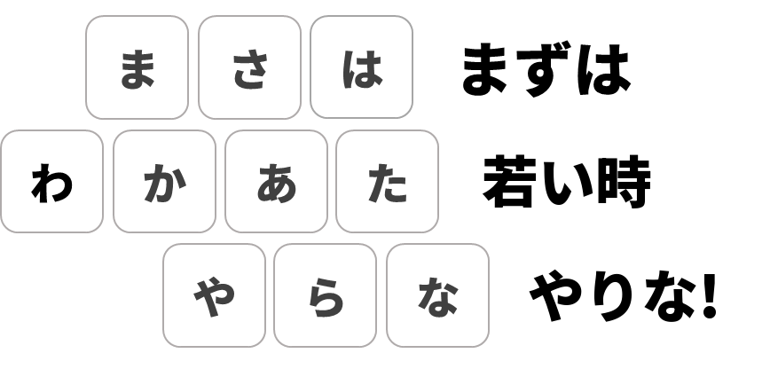

1早見表
これだけ覚えればすぐに使えます。
| したいこと | キー |
|---|---|
| ひらがな ⇄ 英数 | CapsLock |
| 入力がおかしいときに戻す | CapsLock をすばやく2回 |
| 大文字固定のオン／オフ | Shift + CapsLock |
| あ段の文字 | 行キー WER / ASDF / XCV |
| い・う・え・お段 | 行キーのあとに J◀ I▲ L▶ K▼ |
| 濁点・半濁点・小文字 | U（押すたびに切り替わります） |
| ん／っ／ー | O／P／Q |
| 1文字削除 | N または BackSpace |
| 予測候補 | Space |
| 変換候補 | M |
| 候補の移動 | Space・I・J・L |
| 確定 | K（▼） ※ひらがなのまま確定するときは Enter |
| ひとつ前に戻る | Esc |
2動作環境
ワカイトキーは、Windowsの日本語入力（IME）と組み合わせて使うソフトです。
| 項目 | 条件 |
|---|---|
| OS | Windows 10 / 11（64ビット） |
| 日本語入力 | Microsoft IME または Google 日本語入力 ※ ATOKでの動作は、まだ確認していません。 |
3インストール
インストーラーを実行するだけで完了します。管理者権限は必要ありません。
- wakaito.com/download から
Wakaitokey_Setup.exeをダウンロードして実行します。 - インストール先を選びます。通常は自分だけにインストールしてください（管理者権限は不要です）。このPCのすべてのユーザーにインストールする場合は、管理者権限が必要です。
- 「Windows の起動時に Wakaitokey を自動で起動する」は、最初からオンになっています。デスクトップのアイコンは、必要なときだけチェックしてください。
- インストールが終わるとワカイトキーが起動し、画面右下の通知領域（タスクトレイ）にワカイトキーのアイコンが表示されます。
アップデートするときは、新しいインストーラーをそのまま実行してください。起動中のワカイトキーは自動で終了され、上書きされます。
4オン・オフの切り替え（CapsLock）
ワカイトキーは、日本語入力がひらがな（「あ」）のときだけ動作します。英数（「A」）のときや、ほかの言語の入力方式では、キーボードはふだんどおりに動作します。
| 押すキー | 動作 |
|---|---|
| CapsLock を1回 | ひらがな ⇄ 英数 の切り替え。［半角/全角］キーと同じ働きです。 |
| CapsLock をすばやく2回 | 必ずひらがなに戻ります。ワカイトキーが認識している状態と実際の日本語入力の状態がずれたときに使う「リセットボタン」です。 |
| Shift + CapsLock | 大文字固定（Caps Lock）のオン／オフ。もう一度押すと解除されます。 |
| タスクトレイのアイコンを右クリック | 「一時停止」：ワカイトキーを一時的に止めます（もう一度選ぶと再開） 「終了」：ワカイトキーを終了します |
「すばやく2回」が必要な理由
ワカイトキーはほとんどのアプリで日本語入力の状態を自動で読み取るため、マウスで「あ／A」を切り替えても自動で追従します。
ただし、一部のアプリ（Windowsの設定や電卓などのストアアプリ、新しいOutlook、OneDriveなど）では状態を読み取れません。こうしたアプリでタスクバーの「あ／A」をマウスで切り替えると、ワカイトキーがその変化を知ることができず、以降 CapsLock を押すたびに逆の動作になってしまいます。
5キー配列
左手で行を選び、右手で段を選びます。スマートフォンのフリック入力と同じ考え方を、PCのキーボードに移したものです。
覚え方

6予測と変換
かなを入力したら、2つの方法で漢字やカタカナにできます。どちらの場合も、候補を選んでいる間は右手のフリックキーがカーソルの役割をし、K（▼）で確定します。
入力中に表示される予測候補の一覧に移動します。長い言葉やよく使う表現を、最後まで入力せずに選べます。
通常の変換候補の一覧を開きます。入力したかなを漢字に変換するときに使います。
候補を選んでいる間のキー
| キー | 予測候補（Space で表示） | 変換候補（M で表示） |
|---|---|---|
| Space | 次の候補 ▼ | 次の候補 ▼ |
| M | 予測をやめて変換に切り替え | 次の候補 ▼ |
| I ▲ | 前の候補 | 前の候補 |
| J ◀ ／ L ▶ | ［←］［→］キーと同じ | ［←］［→］キーと同じ（文節の移動） |
| K ▼ | 確定 | |
| Esc ／ N ／ BackSpace | ひとつ前に戻る（候補一覧を閉じて入力中の状態へ） | |
| 行キー（かな） | 選んだ候補を確定し、そのまま次の文字を入力 | |
Enter を押すと、ふだんどおり入力中の文字をそのまま（ひらがなで）確定します。マウスでクリックしても入力中の状態はリセットされます。
入力中の文字がないときの Space は、通常のスペースです。
7困ったときは
かなキーを押すとローマ字（w、e、r…）がそのまま出る／英字を入力したいのにかなが出る
どのキーを押してもワカイトキーとして動作しない
- タスクトレイにワカイトキーのアイコンがあるか確認してください。ない場合は、スタートメニューから Wakaitokey を起動します。
- 入力方式が日本語（Microsoft IME または Google 日本語入力）になっているか確認してください（Win+Space で切り替えられます）。
- 日本語入力の表示が「あ」（ひらがな）になっているか確認してください。「A」の場合は CapsLock を押します。
- タスクトレイのアイコンを右クリックして、「一時停止」にチェックが付いていないか確認してください。
管理者として実行しているアプリでだけ動作しない
大文字固定（Caps Lock）を使いたい
ほかのキーボード関連ソフトと一緒に使えますか？
ワカイトキーを一時的に止めたい
お問い合わせ
8自動起動の停止とアンインストール
Windows起動時の自動起動を止める
Ctrl+Shift+Esc でタスクマネージャーを開き →「スタートアップ アプリ」→ Wakaitokey →「無効にする」。
アンインストール
Windowsの「設定」→「アプリ」→「インストールされているアプリ」→ Wakaitokey →「アンインストール」。起動中の場合は自動で終了してから削除されます。